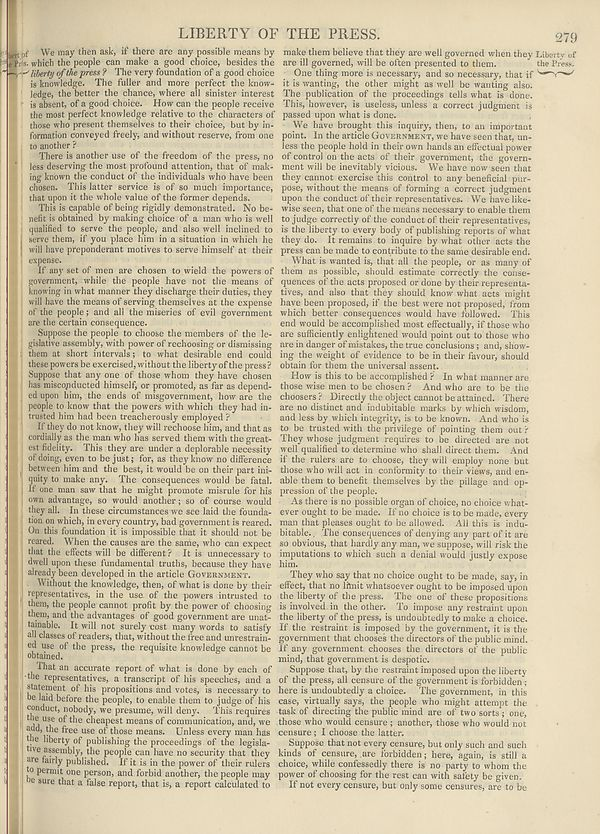

Scan ID britannica:309f765b1ecc83e0a7f7762e44b4a927a7555443:train:1166
Image SHA-256 ec9dc1d6c2c96661593803f1cde606a6c27b453bccb4803b9562db602f4c0c69
Status: ok. Running header: **LIBERTY OF THE PRESS.** (article_title). Removed page furniture: Page-header: **LIBERTY OF THE PRESS.**, Text: 279.
PDF · raw Parse reply · LaTeX
Entries: LIBERTY OF THE PRESS

| # | Class | Box | Parse 3.5 | Used text | Source |
|---|---|---|---|---|---|
| 2 | Text | [0.04, 0.0555, 0.46, 0.1789] | We may then ask, if there are any possible means by which the people can make a good choice, besides the _liberty of the press_? The very foundation of a good choice is knowledge. The fuller and more perfect the know- ledge, to better the chance where the Minister interest is absent, of a good choice. How can the people receive the most perfect knowledge relative to the characters of those who present themselves to their choice, not by the formation conveyed freely, and without reserve, from one to another? | We may then ask, if there are any possible means by which the people can make a good choice, besides the liberty of the press? The very foundation of a good choice is knowledge. The fuller and more perfect the knowledge, the better the chance, where all sinister interest is absent, of a good choice. How can the people receive the most perfect knowledge relative to the characters of those who present themselves to their choice, but by information conveyed freely, and without reserve, from one to another? | super_vl |
| 3 | Text | [0.041, 0.1797, 0.457, 0.243] | There is another use of the freedom of the press, no less deserving the most profound attention, that of making known the context of the individuals who have two chosen. This latter service is of so much importance, that upon it the whole value of the former depends. | There is another use of the freedom of the press, no less deserving the most profound attention, that of making known the conduct of the individuals who have been chosen. This latter service is of so much importance, that upon it the whole value of the former depends. | super_vl |
| 4 | Text | [0.042, 0.2422, 0.458, 0.3172] | This is capable of being rightly demonstrated. No be- nedit is obtained by making choices of a man who as well qualified to serve the people, and also well inclined to were them, if you place him in an situation in which we will have preponderant motives to serve himself at their expense. | This is capable of being rigidly demonstrated. No benefit is obtained by making choice of a man who is well qualified to serve the people, and also well inclined to serve them, if you place him in a situation in which he will have preponderant motives to serve himself at their expense. | super_vl |
| 5 | Text | [0.043, 0.3164, 0.459, 0.3922] | If my set of men are chosen to wield the powers of government, while the people have not the means of knowing in what manner they discharge the duties, they will lasten the means of everyone observes at the expense of the people; and all the miseries of evil government are the certain consequence. | If any set of men are chosen to wield the powers of government, while the people have not the means of knowing in what manner they discharge their duties, they will have the means of serving themselves at the expense of the people; and all the miseries of evil government are the certain consequence. | super_vl |
| 6 | Text | [0.0439, 0.3914, 0.4561, 0.5055] | Suppose the people to choose the members of the legislative assembly, with power of rechosing or dismissing them at short intervals to what desirable end could these powers be exercised, within the history of the press. Suppose that any one of those whom they have chosen has unequivocated himself, or promoted, as far as depend on him, the ends of misgoverment, how are the people to know that the powers with which they had in- turned him had been reached employing people? | Suppose the people to choose the members of the legislative assembly, with power of rechoosing or dismissing them at short intervals; to what desirable end could these powers be exercised, without the liberty of the press? Suppose that any one of those whom they have chosen has misconducted himself, or promoted, as far as depended upon him, the ends of misgovernment, how are the people to know that the powers with which they had intrusted him had been treacherously employed? | super_vl |
| 7 | Text | [0.0449, 0.5047, 0.4551, 0.6945] | If they do not know, they will rechosen him, and that as certainly as the man who has served them with the great est fidelity. They they enter a deplete momentary of doing even to be just a few, as they know no difference between him and the best, it would be on their part in might to make any. The consequences would be fatal. If one man saw that he might promote mistake for his own advantage so would another us of course would they all. In these circumstances we see had the foundation on which, in every country, bad government is reared. On this limitation it is impossible that it should not | trusted him had been treacherously employed? If they do not know, they will rechoose him, and that as cordially as the man who has served them with the great- est fidelity. This they are under a deplorable necessity of doing, even to be just; for, as they know no difference between him and the best, it would be on their part ini- quity to make any. The consequences would be fatal. If one man saw that he might promote misrule for his own advantage, so would another; so of course would they all. In these circumstances we see laid the founda- tion on which, in every country, bad government is rea | super_vl |
| 8 | Text | [0.041, 0.6914, 0.4541, 0.7922] | Without the knowledge, then, of what is done by their representatives, in the use of the powers intended to them, the people cannot profit by the power of choosing, them, and the advantages of good government are unstainable. It will not surely some many would to satisfy all classes of readers, that, without the second musterratified use of the press, the requisite knowledge cannot be obtained. | Without the knowledge, then, of what is done by their representatives, in the use of the powers intrusted to them, the people cannot profit by the power of choosing them, and the advantages of good government are unattainable. It will not surely cost many words to satisfy all classes of readers, that, without the free and unrestrained use of the press, the requisite knowledge cannot be obtained. | super_vl |
| 9 | Text | [0.0391, 0.793, 0.4531, 0.9484] | That an accurate report of what is done by each of the representatives, a transcript of his species, and a statement of his proportions and votes, is necessary to be laid before the people, to enable them to judge of his conduct, nobody, we presume, will deny. This requires the use of the cheapest means of communication, and, we add, the free use of those means. Unless every man has the liberty of publishing the proceedings of the legisla-tive assembly, the people can have to are taxing published. I have to in the power of their rules to permit one person, and forbid another, the people may be | That an accurate report of what is done by each of the representatives, a transcript of his species, and a statement of his propositions and votes, is necessary to be laid before the people, to enable them to judge of his conduct, nobody, we presume, will deny. This requires the use of the cheapest means of communication, and, we add, the free use of those means. Unless every man has the liberty of publishing the proceedings of the legislative assembly, the people can have no security that they are fairly published. If it is in the power of their rulers to permit one person, and forbid another | super_vl |
| 10 | Text | [0.4668, 0.0563, 0.8359, 0.0836] | make them believe that they are well governed when they are ill governed, will be often presented to them. | make them believe that they are well governed when they are ill governed, will be often presented to them. | super_vl |
| 11 | Text | [0.4678, 0.0805, 0.8945, 0.1461] | One thing more is necessary, and so necessary, that if it is wanting, the other might as well be wanting also. The publishes of the proceeding tells me that it alone. This, however, is useless, unless a correct judgment is passed upon what is done. | One thing more is necessary, and so necessary, that if it is wanting, the other might as well be wanting also. The publication of the proceedings tells what is done. This, however, is useless, unless a correct judgment is passed upon what is done. | super_vl |
| 12 | Text | [0.4688, 0.1453, 0.8955, 0.3094] | We have brought this inquiry, then, to an important point. In the article GOVERNMENT, we have seen that, unless the people hold in their own hands an official power of control to the act and of their governors the government will be inevitably vicicious. We have now seen that they cannot exercise the control to any beneficial pur- pises, without the means of forming a correct judgment upon the conduct of their representatives. We have likewise seen, that one of the names necessary to enable them to judge correctly of the conduct of their representatives, is the liberty to every body of publish | We have brought this inquiry, then, to an important point. In the article GOVERNMENT, we have seen that, unless the people hold in their own hands an effectual power of control on the acts of their government, the government will be inevitably vicious. We have now seen that they cannot exercise this control to any beneficial purpose, without the means of forming a correct judgment upon the conduct of their representatives. We have likewise seen, that one of the means necessary to enable them to judge correctly of the conduct of their representatives, is the liberty to every body of publishing | super_vl |
| 13 | Text | [0.4697, 0.3086, 0.8936, 0.4469] | What is wanted is, that all the people, or as many of them as possible, should estimate correctly the consequences of the acts proposed or done by their representative, and also that they should know what sets might have been proposed, if the best were not proposed, from which better consequences would have followed. This end would be accomplished most effectively, if those who are actually significantly could point out to those who are in danger of mistakes, the true conclusions; and, show- ing the weight of evidence to be in their favour, should obtain its them the universal agent. | What is wanted is, that all the people, or as many of them as possible, should estimate correctly the consequences of the acts proposed or done by their representatives, and also that they should know what acts might have been proposed, if the best were not proposed, from which better consequences would have followed. This end would be accomplished most effectually, if those who are sufficiently enlightened would point out to those who are in danger of mistakes, the true conclusions; and, showing the weight of evidence to be in their savour, should obtain for them the universal assent. | super_vl |
| 14 | Text | [0.4707, 0.4461, 0.8809, 0.5969] | How is this to be accomplished? In what manner are those wise men to be chosen? And who are to be the chores? Directly the object cannot be attained. There are no distinct and indubitable marks by which wisdom, and less by which integrity, is to be known. And who is to be trusted with the privilege of putting them out? They whose judgment requires to be directed are not well qualified to determine who shall direct them. And if the rules are to choose, they will employ none but those who will eat, in conformity to their views, and en- able them to benefit themselves by the pillage and op-pressi | How is this to be accomplished? In what manner are those wise men to be chosen? And who are to be the choosers? Directly the object cannot be attained. There are no distinct and indubitable marks by which wisdom, and less by which integrity, is to be known. And who is to be trusted with the privilege of pointing them out? They whose judgment requires to be directed are not well qualified to determine who shall direct them. And if the rulers are to choose, they will employ none but those who will act in conformity to their views, and enable them to benefit themselves by the pillage and oppressi | super_vl |
| 15 | Text | [0.4717, 0.5961, 0.8799, 0.682] | As there is no possible organ of choice, the cho what- ever ought to be made. If no choice is to be made, every man than the pleasant night to be allowed. All this is indu- bitable. The consequences of denying any part of it are no obvious, that hardly any man overspouse will risk the impululations to which such a denial would justify expose him. | As there is no possible organ of choice, no choice what- ever ought to be made. If no choice is to be made, every man that pleases ought to be allowed. All this is indubitable. The consequences of denying any part of it are so obvious, that hardly any man, we suppose, will risk the imputations to which such a denial would justly expose him. | super_vl |
| 16 | Text | [0.4727, 0.6813, 0.8818, 0.7984] | They who say that no choice ought to be made, say in effect, that no limit whatsoever ought to be imposed upon the liberty of the press. The one of these propositions is involved in the other. To impose any restraint upon the liberty of the press, is undoubtedly to make a choice. If the restraints is imposed by the movement, it is the movement has the choice after the public mind. If any government chooses the directors of the public mind, that government is depicted. | They who say that no choice ought to be made, say, in effect, that no limit whatsoever ought to be imposed upon the liberty of the press. The one of these propositions is involved in the other. To impose any restraint upon the liberty of the press, is undoubtedly to make a choice. If the restraint is imposed by the government, it is the government that chooses the directors of the public mind. If any government chooses the directors of the public mind, that government is despotic. | super_vl |
| 17 | Text | [0.4658, 0.7969, 0.8789, 0.8859] | Suppose that by the restraint imposed upon the liberty of the press, all censure of the government is forbidden; here is undubledly a choice. The government, in this case, eventually was, the people who might attempt the task of directing the public mind are of two sorts; one, those who would ensure; another, those who would not consume; I choose the latter. | Suppose that, by the restraint imposed upon the liberty of the press, all censure of the government is forbidden; here is undoubtedly a choice. The government, in this case, virtually says, the people who might attempt the task of directing the public mind are of two sorts; one, those who would censure; another, those who would not censure; I choose the latter. | super_vl |
| 18 | Text | [0.4648, 0.8836, 0.8828, 0.9367] | Suppose that not every censure, but only such and such kinds of courses, are forbidden; here, again, is still a choice, while contestedly there is no party to whom the power of choosing for the rest can with safety be given. | Suppose that not every censure, but only such and such kinds of censure, are forbidden; here, again, is still a choice, while confessedly there is no party to whom the power of choosing for the rest can with safety be given. | super_vl |
| 19 | Text | [0.4639, 0.9266, 0.8779, 0.9508] | If not every censure, but only some censures, are to be | If not every censure, but only some censures, are to be | super_vl |
Britannica scans: National Library of Scotland, CC0 1.0. Wikipedia text: Wikipedia contributors, CC BY-SA 4.0, revision links on each page. Generated 2026-10-18T13:26:14+00:00.